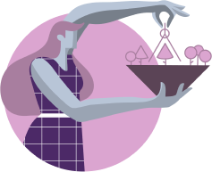

Reformers bring dutifulness, order, steadiness, attention to detail,
and a profound appreciation for high standards to the relationship.
While Enthusiasts bring curiosity, energy, fun and adventure. And
also, a desire to live new experiences and give everything they can
a try. Both of them love planning. They are future-oriented and
idealistic.
However, Enneagram type 7s prefer having a wide range of options and keep all plans open to change whenever they need to. They bring spontaneity and freedom to the relationship. As opposed to Enneagram type 1s more methodical manners that help Enneagram type 7s stay on track.
Enthusiasts offer Reformers excitement and the ability to think of life as a source of pleasure and enjoyment, not just work. Enthusiasts maintain Reformers’ spirits up, refreshing their idealism while preventing the relationship from getting too intense. Ones offer Sevens a sense of perfection, idealism and direction. They help type 7s get stable while they keep on working systematically and consistently toward goals. Enthusiasts appreciate their partner’s harmony and reliability and are glad to have someone who can keep an eye on details.
This couple will be really supportive of each other as long as they have similar values and are both working towards the same goals. This relationship has the potential to be really stimulating for both since they are able to support each other while also feeling challenged by their differences.
However, Enneagram type 7s prefer having a wide range of options and keep all plans open to change whenever they need to. They bring spontaneity and freedom to the relationship. As opposed to Enneagram type 1s more methodical manners that help Enneagram type 7s stay on track.
Enthusiasts offer Reformers excitement and the ability to think of life as a source of pleasure and enjoyment, not just work. Enthusiasts maintain Reformers’ spirits up, refreshing their idealism while preventing the relationship from getting too intense. Ones offer Sevens a sense of perfection, idealism and direction. They help type 7s get stable while they keep on working systematically and consistently toward goals. Enthusiasts appreciate their partner’s harmony and reliability and are glad to have someone who can keep an eye on details.
This couple will be really supportive of each other as long as they have similar values and are both working towards the same goals. This relationship has the potential to be really stimulating for both since they are able to support each other while also feeling challenged by their differences.


Possible Conflicts and Differences of Opinion:
Although the compatibility between these two Enneagram types is high, during stressful situations, some issues may arise.
On one hand, Ones can be critical, inflexible, judgmental, and closed-minded. They will insist that things must be done one specific way: their way. And will, inevitably, think of Sevens as inefficient, undisciplined, innocent and naive. Enneagram type 1s consider that type 7s tend to fool around way too much, that they over withdraw to themselves and promise way too much to way too many people. They will also often feel that their Enthusiast match is unfocused and distracted simply to annoy them. On the other hand, Sevens will probably think of Ones as inflexible, closed-minded and perfectionistic.
Conflicts between these two also arise in organizational and financial matters: Ones might feel that Sevens are wasteful and immoderate while Sevens might feel that their partners are tight-fisted and boring.
Although the compatibility between these two Enneagram types is high, during stressful situations, some issues may arise.
On one hand, Ones can be critical, inflexible, judgmental, and closed-minded. They will insist that things must be done one specific way: their way. And will, inevitably, think of Sevens as inefficient, undisciplined, innocent and naive. Enneagram type 1s consider that type 7s tend to fool around way too much, that they over withdraw to themselves and promise way too much to way too many people. They will also often feel that their Enthusiast match is unfocused and distracted simply to annoy them. On the other hand, Sevens will probably think of Ones as inflexible, closed-minded and perfectionistic.
Conflicts between these two also arise in organizational and financial matters: Ones might feel that Sevens are wasteful and immoderate while Sevens might feel that their partners are tight-fisted and boring.
30
Enneagram 1 in Relationships